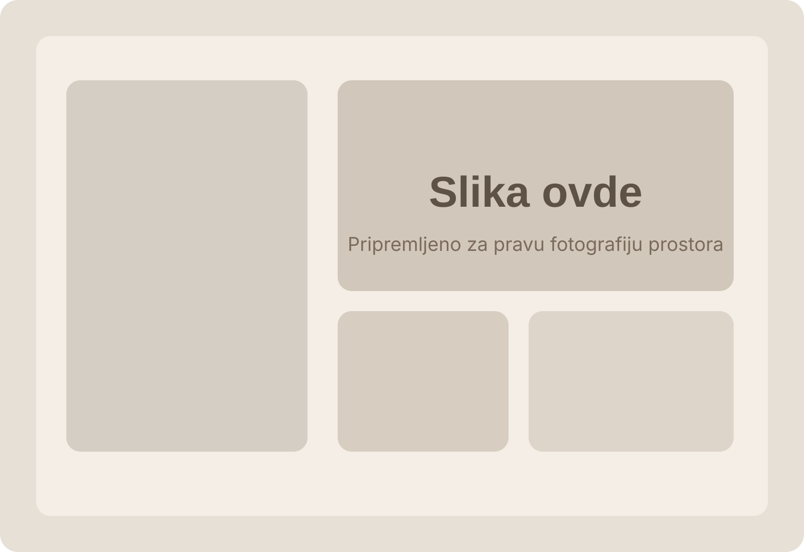
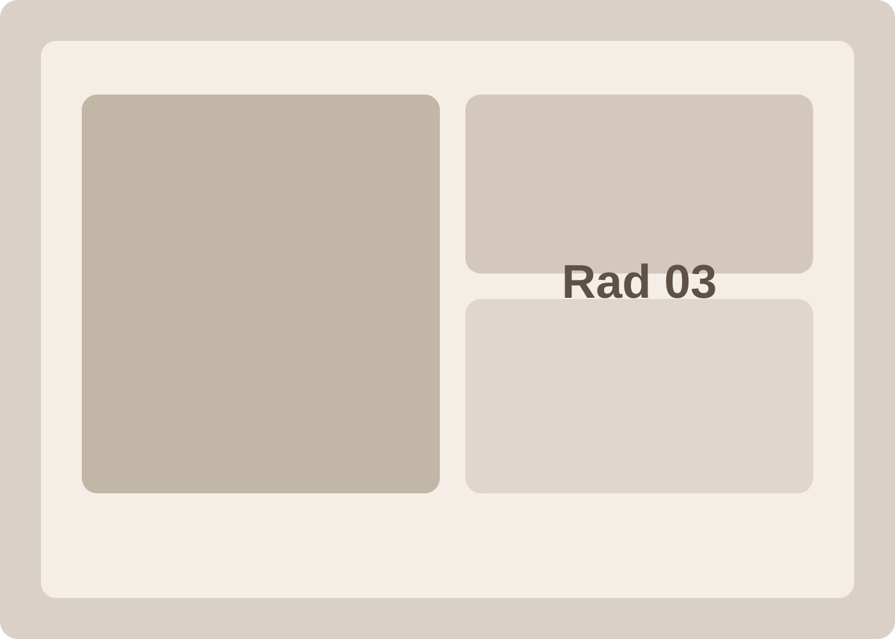
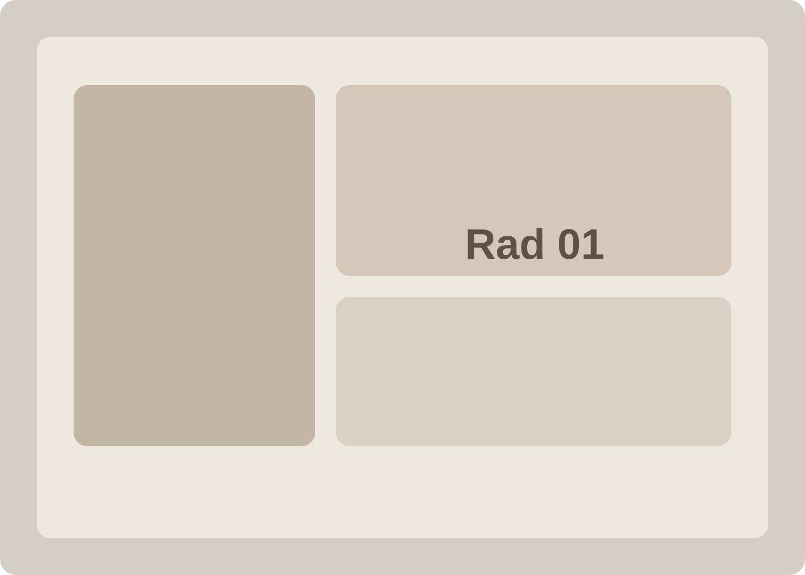
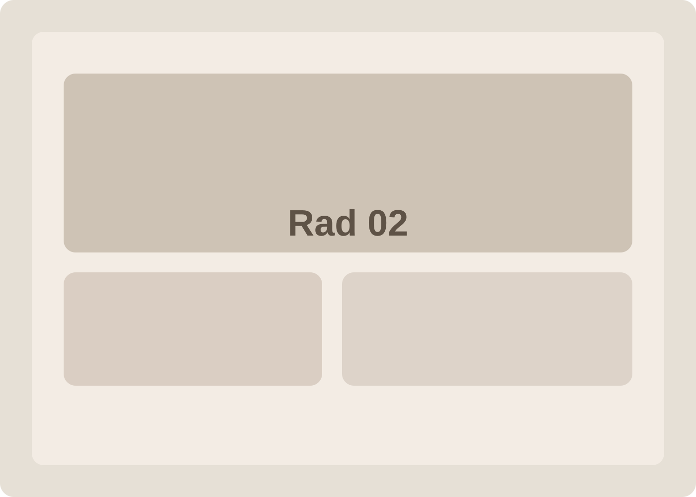

Dubinsko čišćenje
Za stanove i kuće kojima je potrebno ozbiljno osveženje prostora, a ne samo osnovno održavanje.
- Kuhinje, kupatila i kontaktne zone
- Detaljna obrada frontova, stakla i detalja
- Vizuelno rasterećen i osvežen enterijer
Ne nudimo generičke pakete. Svaka usluga je osmišljena prema vrsti prostora, nivou zaprljanosti i utisku koji želite da dobijete po završetku tretmana.
Kada birate profesionalno čišćenje, najvažnije je da znate šta dobijate. Zato je svaka usluga predstavljena kroz jasan obim rada, namenjen prostor i očekivani vizuelni efekat.
Za stanove i kuće kojima je potrebno ozbiljno osveženje prostora, a ne samo osnovno održavanje.
Čišćenje kancelarija, salona i manjih poslovnih enterijera bez ometanja rada i ritma tima.
Tretmani koji vraćaju osećaj svežine foteljama, sofama, stolicama i tapaciranim površinama.
Kada prostor treba da bude spreman za useljenje, predaju ili početak korišćenja bez dodatnog haosa.

Ova usluga je idealna kada želite da prostor izgleda uredno, rasterećeno i spremno za svakodnevni boravak. Najviše vrednosti donosi u kuhinjama, kupatilima i zonama koje nose najveći vizuelni teret prostora.

Kada radite sa klijentima ili timom u prostoru koji mora da izgleda uredno svaki dan, važni su tačnost, diskretnost i jasan raspored rada. Zato ovu uslugu organizujemo bez ometanja svakodnevnog ritma.

Sofe, fotelje, stolice i drugi tapacirani elementi često određuju da li enterijer deluje negovano. Ovim tretmanom prostor dobija jasniji, lakši i svežiji utisak bez velike intervencije.

Posle radova ostaju prašina, sitni ostaci i površine koje traže završni tretman. Ova usluga je namenjena momentu kada prostor treba da izgleda gotov, uredan i spreman za korišćenje.
Definišemo vrstu prostora, obim rada i termin koji vam odgovara.
Tim dolazi sa jasnim sledom koraka, bez improvizacije i nepotrebnog zadržavanja.
Na kraju prostor izgleda uredno, smireno i spremno za rad, život ili prijem gostiju.
Da. Nakon inicijalnog dolaska možemo definisati ritam čišćenja kancelarija ili drugih poslovnih prostora koji prati vaše potrebe.
Kada želite više od osnovnog održavanja, posebno u kuhinji, kupatilu ili opterećenim zonama, dubinsko čišćenje je pravi izbor.
Da. Tretmani nameštaja i tekstila izvode se u prostoru klijenta, uz plan rada prilagođen situaciji na terenu.
Da. Čišćenje nakon radova organizujemo kada je potrebno da prostor bude spreman za useljenje, predaju ili početak korišćenja.
Dovoljno je da pošaljete osnovne informacije o prostoru ili nas pozovete. Dobićete jasan odgovor, bez komplikovanja i bez nejasnih koraka.